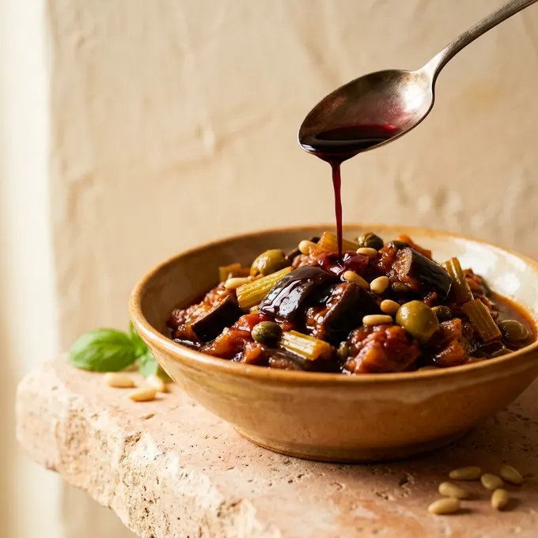

Vorspeise · Sizilien
Caponata
Das süßsaure Auberginengemüse, an dem sich jede sizilianische Küche messen lässt.
- Gesamt
- 50 Min.
- Davon aktiv
- 25 Min.
- Portionen
- 4
- Aufwand
- einfach
Zutaten
- 2Auberginen (ca. 700 g)
- 3Stangen Staudensellerie
- 1große Zwiebel
- 400 greife Tomaten
- 60 mlnatives Olivenöl extra
- 2 ELKapern in Meersalz, gewässert
- 80 ggrüne Oliven, entsteint
- 3 ELWeinessig aus Nero d’Avola
- 1 ELRohrzucker
- Salz, Basilikum
Zubereitung
Auberginen in 2 cm große Würfel schneiden, salzen und 20 Minuten in einem Sieb abtropfen lassen. Danach trocken tupfen — das ist der Unterschied zwischen Caponata und Ölschwamm.
Auberginen in reichlich Olivenöl portionsweise goldbraun braten, herausnehmen und auf Küchenpapier abtropfen lassen.
Sellerie und Zwiebel im selben Topf glasig dünsten. Tomaten grob würfeln, zugeben und 10 Minuten einkochen lassen.
Kapern, Oliven und Auberginen unterheben. Essig und Zucker verrühren, angießen und offen 5 Minuten einkochen, bis die Säure rund schmeckt.
Vom Herd nehmen, abschmecken, mindestens zwei Stunden ziehen lassen. Lauwarm oder kalt servieren, mit Basilikum.
Tipp Caponata schmeckt am zweiten Tag besser als am ersten. Größer ansetzen lohnt sich.